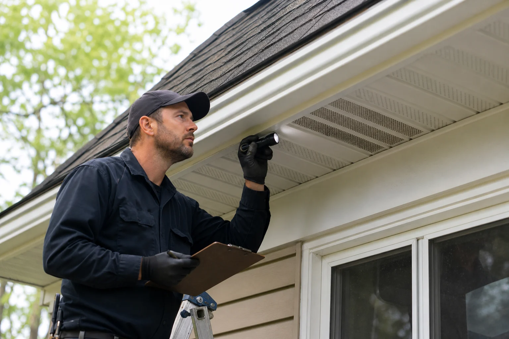

Activity pattern
Noises, timing, tracks, droppings, odor, and visible damage help narrow down the likely species and access route.
Detailed service paths for humane animal removal, structural exclusion, cleanup planning, and urgent wildlife response.
Wildlife work should not stop at removing the animal. A useful service path looks at how the animal got in, what conditions attracted it, and what needs to be repaired or cleaned after the activity is resolved.

Open the service that matches the animal activity, damage pattern, or prevention work you need handled.
The best service choice depends on the animal, the structure, the urgency, and whether cleanup or repair is needed after removal.
Noises, timing, tracks, droppings, odor, and visible damage help narrow down the likely species and access route.
Rooflines, vents, crawl spaces, chimneys, garages, decks, and gaps around utilities each need a different prevention plan.
Animals inside living areas, snakes, bats, strong odors, and active attic damage may require faster coordination.
Some calls need repair, sanitation, insulation review, odor control, or follow-up verification after removal is complete.